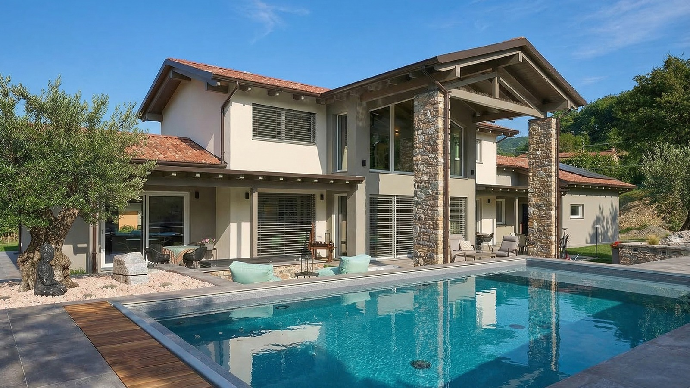
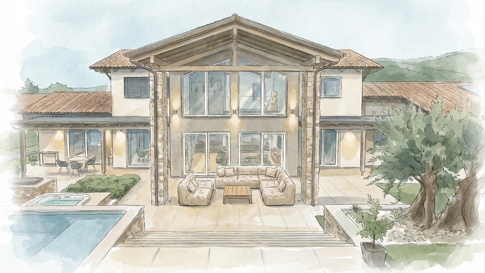
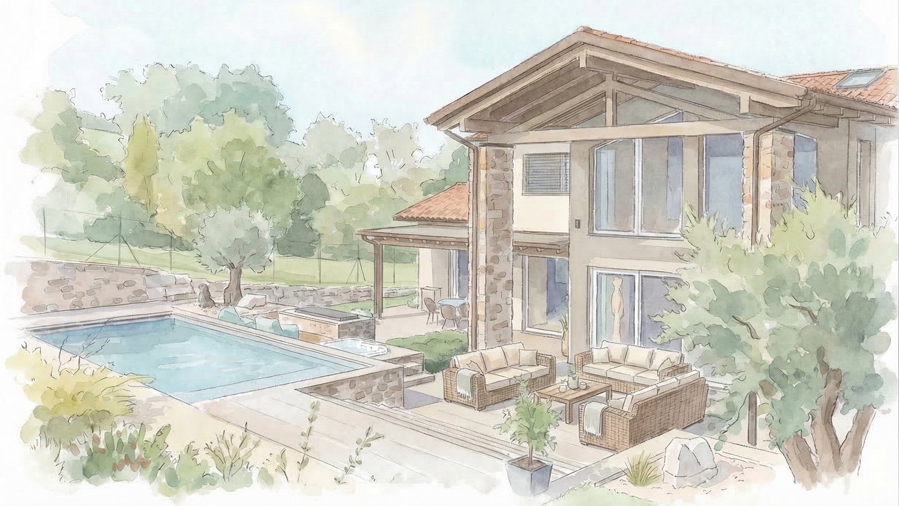
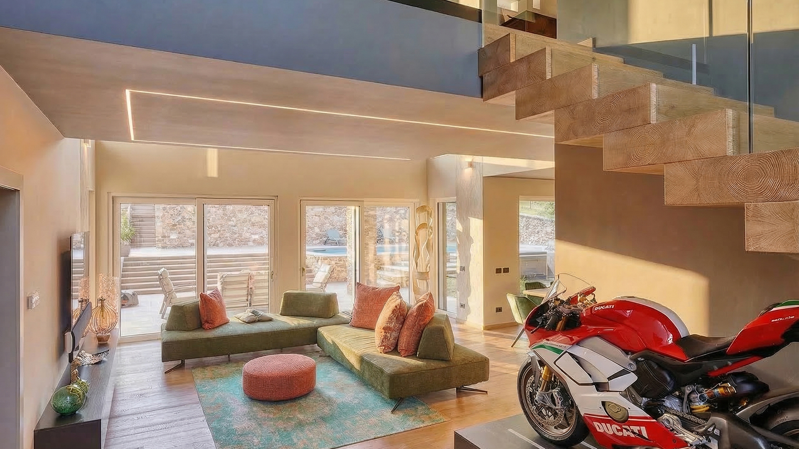
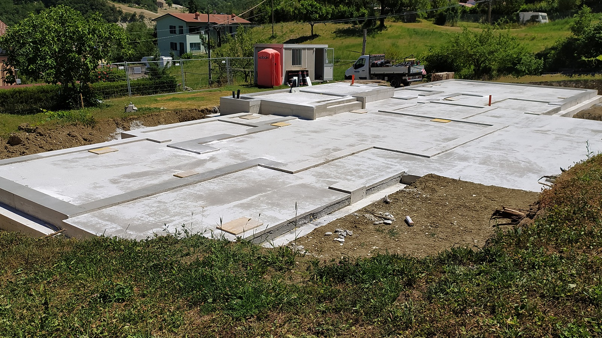

Una casa che parla di chi la abita.
Villa L|R nasce da una partecipazione molto forte di chi la avrebbe abitata. Il progetto non cerca semplicemente di rispondere a un programma funzionale: prova a dare un posto preciso anche alle passioni, agli oggetti e ai modi di vivere che appartengono alle persone.


Non volevamo progettare una casa genericamente bella. Volevamo che appartenesse davvero a chi l’avrebbe abitata. Per questo alcune scelte sono nate da elementi molto personali, che normalmente potrebbero sembrare secondari e che invece sono diventati parte del progetto. Gli schizzi iniziali raccontano già quasi tutta la casa: il grande portico centrale, la piscina, la pietra, le aperture verso il giardino. La costruzione che verrà dopo è sorprendentemente vicina a quell’idea.

Una Ducati è un’opera di ingegneria meccanica nella quale ogni elemento nasce da una funzione e, proprio per questo, contribuisce alla forma dell’insieme. Ci piaceva l’idea che trovasse il suo posto al centro di un’altra struttura che, in modo completamente diverso, segue lo stesso principio. La scala in legno unisce i due livelli della casa ma è anche uno degli elementi che caratterizzano maggiormente lo spazio del soggiorno. È stata progettata perché la sua struttura quasi scomparisse alla vista, lasciando leggere la successione dei gradini come elementi sospesi. La Ducati trova posto proprio sotto di lei.
Due oggetti molto diversi, entrambi nati dall’incontro tra tecnica, funzione e forma.
In questa fotografia la casa ancora non c’è. Sono state realizzate le opere di fondazione ed è pronta la piattaforma sulla quale verrà montata la struttura prefabbricata in legno. È uno dei momenti particolari di questo modo di costruire: per settimane il cantiere sembra quasi fermo, poi la casa arriva e in pochi giorni acquista volume.

Tra l’idea e la casa costruita cambiano molte cose. Quello che conta è riconoscere ancora il progetto da cui siamo partiti.
Informativa Privacy (Privacy Policy)
Per conoscere le modalità di trattamento dei dati personali e l'utilizzo dei cookie su questo sito, consulta l'Informativa sulla Privacy completa.